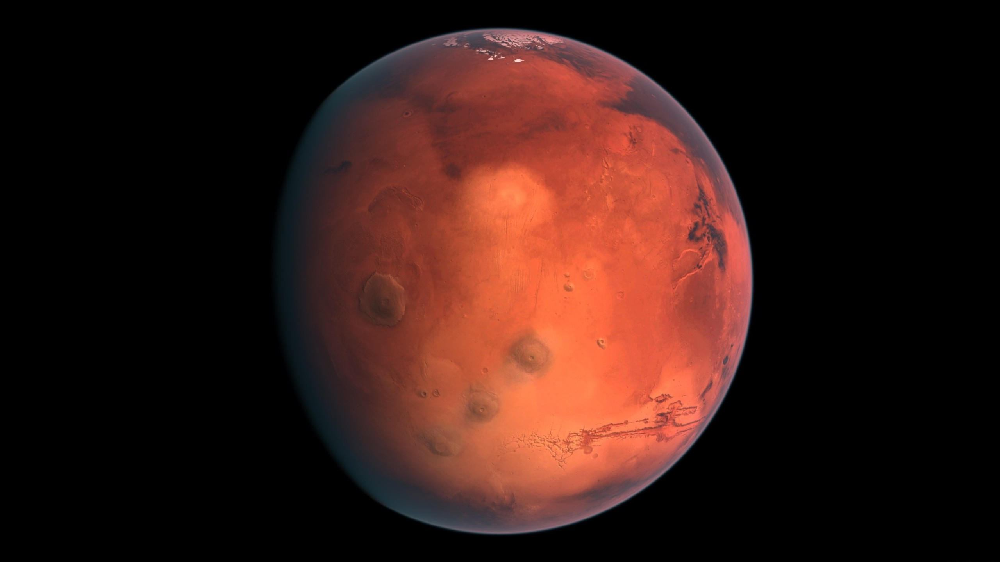

Güneş Sistemi İçerisinde Bulunan Gezegenler ve Özellikleri
Jüpiter
Güneşe en yakın beşinci gezegendir.
Büyüklüğünden dolayı ismini Antik Roma’da “Tanrıların Kralı” olarak bilinen Jüpiter’den
almıştır.
Küçük ve katı bir çekirdeği vardır, geri kalan kısmı sıvı hidrojenden oluşur.
Güneş ışınlarının büyük bir bölümünü yansıtır.
79 tane uydusu bulunmaktadır ve bunlardan en büyüğü olan “Ganymede”, Güneş sisteminin en
büyük
uydusudur.
Güneş etrafındaki bir tam dönüşünü 12 yılda tamamlar.

Mars
Güneşe en yakın dördüncü gezegendir.
Adını Antik Roma Savaş Tanrıçası Mars’dan almıştır.
Bugüne kadar en çok uzay aracı gönderilen gezegendir.
Dünya ile benzer özellikler göstermesinden dolayı Mars’ta yaşam olabileceğine dair çok
sayıda
teori vardır.
Phobos ve Deimos adında iki adet uydusu bulunmaktadır.

Satürn
Güneş’e en yakın altıncı gezegendir.
İsmini Antik Roma mitolojisinde Jüpiter’in babası olan Satürn’den almıştır.
Güneş etrafındaki bir tam dönüşünü yaklaşık 29,5 yılda tamamlamaktadır..
Güneş sistemi içerisindeki yoğunluğu en düşük gezegendir.
Gezegenin irili ufaklı 62 adet uydusu vardır.

Neptün
Güneş’e en uzak gezegendir. Güneş’e olan uzaklığı, Dünya’dan 30 kat daha fazladır.
Adını Antik Roma “Denizlerin Tanrısı”ndan almaktadır.
Neptün, yörüngesindeki bir tam turunu 165 yılda tamamlamaktadır.
Neptün’ün atmosferi oldukça aktiftir. Saniyede 1340 kilometrelik bir hıza ulaşan
fırtınalar
vardır.
Bugüne kadar keşfedilmiş 14 uydusu bulunmaktadır.
Ortalama sıcaklığı -214 derecedir.

Dünya
Dünya’mız Güneş’e en yakın üçüncü gezegendir.
Dünya’nın atmosferi yüzde 78 azot, yüzde 21 oksijen ve yüzde 1 diğer gazlardan oluşur.
Dünya, kendisi etrafındaki dönüşünü 23 saat 56 dakika 4 saniyede tamamlar.
Güneş etrafındaki dönüşünü ise 365 gün 5 saat 48 dakika ve 46 saniyede tamamlar.
Günümüze kadar keşfedilen gezegenler arasında yaşanabilir tek gezegendir.
Gezegenimizin tek uydusu Ay’dır.

Uranüs
Güneş’e en uzak ikinci gezegendir.
Uranüs, yörüngesindeki bir tam turunu 84 yılda tamamlamaktadır.
Ortalama sıcaklığı -224 derecedir.
Pek ihtişamlı olmasa da 13 adet halkası vardır.
Bugüne kadar yalnızca bir uzay aracı tarafından ziyaret edilen Uranüs’ün 27 adet uydusu
vardır.
Merkür
Güneş’e en yakın gezegendir. Güneş’e olan mesafesi 57.909.000 kilometredir.
Güneş’in etrafındaki yörünge turunu hızlı tamamlamasından dolayı ismini Antik Roma
mitolojisinde
“Haberci Tanrısı” olarak bilinen Merkür’den almaktadır.
Güneş sisteminde bulunan gezegenler arasında en küçüğüdür.
Merkür gezegeninin uydusu yoktur.
Güneş sisteminin en hızlı gezegenidir.
Dünya’dan görüldüğü kadarıyla, yörüngesi etrafındaki hareketini 88 günde
tamamlamaktadır.

Venüs
Venüs gezegeni Güneş’e en yakın ikinci gezegendir.
Adını görünüşü nedeniyle Antik Roma Aşk ve Güzellik Tanrıçası Venüs’ten almıştır.
Venüs gezegeninin büyüklüğü neredeyse Dünya ile aynıdır.
Diğer gezegenlerin tamamı aynı yöne doğru dönerken Venüs ters bir yörünge
çizmektedir.
Güneş etrafındaki bir tam dönüşünü 224,7 Dünya gününde tamamlar.
Aralarındaki birçok benzerlikten dolayı “Dünya’nın ikizi” olarak da bilinmektedir.